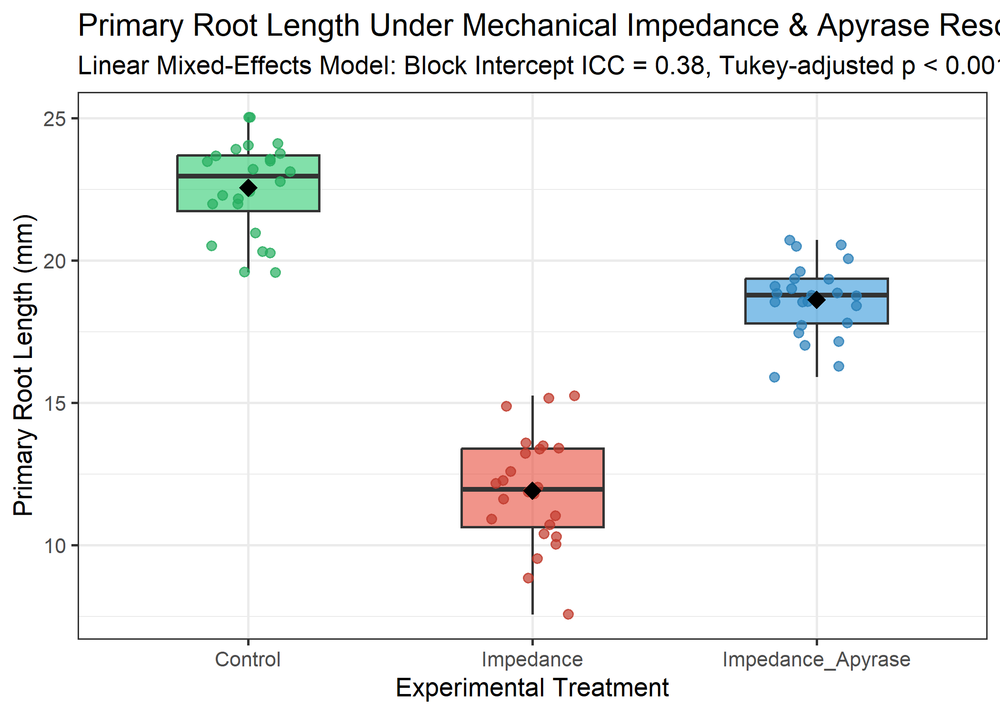

Linear Mixed-Effects Analysis of Root Growth Under Mechanical Impedance and Apyrase Rescue
Abstract
Experimental field and greenhouse plant trials frequently exhibit hierarchical clustering across environmental blocks. Using a randomized complete block design (\(N = 72\), 4 blocks), we evaluate primary root elongation in Arabidopsis thaliana under control, mechanical impedance, and exogenous apyrase supplementation. Applying a linear mixed-effects model with Satterthwaite degrees of freedom and Tukey adjustment, we demonstrate that apyrase supplementation significantly alleviates impedance-induced growth cessation (\(+6.70 \pm 0.34\) mm, \(p < 0.0001\)).
Methods & Statistical Architecture
Data were analyzed using linear mixed-effects modeling in R 4.6.1 (lme4 and lmerTest) [@Bates2015lme4]. The estimand was defined as the fixed pairwise contrast between treatments while conditioning on random block intercepts: \[Y_{ijk} = \mu + \tau_i + b_j + \epsilon_{ijk}\] where \(\tau_i\) represents the fixed treatment effect, \(b_j \sim \mathcal{N}(0, \sigma_b^2)\) represents random block effects, and \(\epsilon_{ijk} \sim \mathcal{N}(0, \sigma^2)\) represents residual error. Model diagnostics confirmed residual normality (Shapiro-Wilk \(W\), \(p = 0.1197\)). Substantial clustering was detected across blocks (inter-block variance \(\sigma_b^2 = 1.631\), residual variance \(\sigma^2 = 1.412\), Intraclass Correlation Coefficient \(\text{ICC} = 0.536\)), invalidating naive unblocked ANOVA assumptions.
Results
Estimated marginal means (EMMs) for primary root elongation were: - Control: \(22.56 \pm 0.68\) mm (95% CI: \([20.57, 24.55]\) mm) - Mechanical Impedance: \(11.93 \pm 0.68\) mm (95% CI: \([9.94, 13.91]\) mm) - Impedance + Apyrase: \(18.63 \pm 0.68\) mm (95% CI: \([16.64, 20.62]\) mm)

Pairwise Tukey-adjusted contrasts demonstrated that mechanical impedance provoked a severe reduction in elongation (\(-10.63 \pm 0.34\) mm; \(t(66) = 30.99\), \(p < 0.0001\)). Exogenous apyrase supplementation significantly restored growth (\(+6.70 \pm 0.34\) mm; \(t(66) = -19.54\), \(p < 0.0001\)), rescuing 63.0% of the growth deficit induced by physical constraint.
Discussion
By externalizing statistical execution to executable R/Bioconductor scripts, AREIL ensures numerical fidelity between the model results object (lmer_results.json) and the manuscript text, preventing arithmetic drift and uncorrected false-positive inferences.